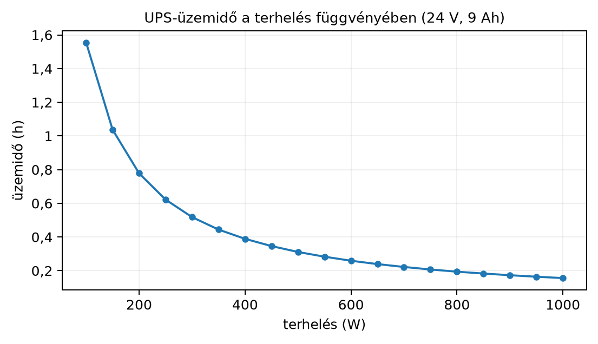

![Hálózat–aggregátor átkapcsolás reteszelt mágneskapcsolókkal (elvi, egyfázisú) - K1 a hálózati, K2 az aggregátoros mágneskapcsoló (alapállapotban mindkettő nyitva). A két kimenet a ponttal jelölt közös csomópontban találkozik, és innen táplálja a terhelést; a forrásoknak és a terhelésnek közös az N-vezetője. Mivel a két ág ugyanarra a csomópontra fut, K1 és K2 egyszerre soha nem zárhat: mechanikus és villamos reteszelés kell. Egyszerűsített elvi rajz: a védelmek, a PE, a vezérlés és a nullavezető kapcsolása (négypólusú átkapcsoló) nincs feltüntetve.](assets/ve132-diagram-1.png)
Egy kisebb ipari üzem irodájában a szerelő azt a feladatot kapja, hogy a szerver és az adatmentő rendszer mellé szünetmentes tápegységet (UPS) telepítsen, mert a környéken gyakoriak a rövid, néhány másodperces hálózati feszültségkimaradások. A karbantartó műhelyben emellett egy dízelaggregátort is üzemeltetnek, amely áramszünet esetén át kell, hogy vegye a fontos fogyasztók ellátását. A szerelőnek nem elég csak bekötnie a készülékeket: tudnia kell, milyen UPS típus illik az adott fogyasztóhoz, mekkora akkumulátor szükséges a kívánt üzemidőhöz, és hogyan kell reteszelni az aggregátor átkapcsolóját, hogy soha ne kerülhessen össze a hálózattal. Ez az alfejezet ezt a három területet tanítja meg: a szünetmentes áramforrásokat, az akkumulátorok méretezését és az aggregátoros betáplálás átkapcsolását.
Egy kis irodai UPS dobozán a következő adatok szerepelnek: bemenet 230 V, 50 Hz; kimenet 230 V, 650 VA / 390 W; akkumulátor 12 V, 9 Ah, ólom-savas. A hálózati feszültség kiesésekor a készülék egy rövid kattanással átkapcsol belső akkumulátoros üzemre, és a számítógép tovább működik. Ha viszont a szerelő rosszul választ UPS-t, az átkapcsolás alatt a számítógép újraindul, vagy a túl nagy terhelés miatt az akkumulátor néhány másodperc alatt lemerül, és az adatmentés meghiúsul. A következő ábra egy ilyen méretezési helyzetet mutat, de már egy nagyobb, 24 V-os, 9 Ah-s akkumulátorú UPS-re – ugyanarra, amellyel a fejezet számpéldái is számolnak –: adott akkumulátor-energiánál hogyan csökken az elérhető üzemidő a terhelés növelésével (100–1000 W). A dobozon látott 12 V-os, 390 W-os kis UPS ennél kisebb: tárolt hasznos energiája fele akkora (, 300 W-on kb. 16 perc), és 390 W fölött már túlterhelt.

Az ábra számszerűen is mutatja: ha a terhelést 100 W-ról 1000 W-ra növeljük, az üzemidő 1,55 óráról körülbelül 9 percre csökken ugyanazzal az akkumulátorral.
Definíció. A szünetmentes áramforrás (uninterruptible power supply, UPS) olyan villamos készülék vagy berendezés, amely a hálózati feszültség kiesése, jelentős eltérése vagy megszakadása esetén a hozzá csatlakoztatott fogyasztókat energiaforrásból – jellemzően akkumulátorból – tovább táplálja, és ezzel megakadályozza az üzemzavart, adatvesztést vagy folyamatleállást.
Definíció. Az átkapcsolási idő az az időtartam, amely a hálózati feszültség meghibásodásának érzékelésétől a fogyasztó akkumulátoros ellátásának megkezdéséig eltelik. Minél rövidebb ez az idő, annál kisebb a fogyasztó működésében bekövetkező zavar.
A UPS-eket a fogyasztó szempontjából lényeges működési mód szerint három alapvető csoportba soroljuk: offline, line-interaktív és online. A megnevezés nem a minőség, hanem a bemeneti áram útjának és a feszültségkezelésnek a jellegére utal.
Offline (standby) UPS. Normál üzemben a fogyasztó közvetlenül, gyakorlatilag a hálózatról kapja a feszültséget; az akkumulátortöltő a belső akkumulátort karbantartó töltéssel tölti. Hálózati feszültségkimaradáskor a készülék érzékelője kapcsol, és az inverter az akkumulátorból állítja elő a kimeneti feszültséget. Az átkapcsolási idő tipikusan néhány milliszekundum, ezért irodai számítógéphez, kisméretű hálózati eszközhöz, kijelzőhöz általában elegendő. Hátránya, hogy a feszültség-ingadozásokat, gyors tranziens zavarokat normál üzemben nem szabályozza, legfeljebb szűrőelemekkel csökkenti.
Line-interaktív UPS. Normál üzemben a fogyasztó a hálózatra csatlakozik, de egy fokozatkapcsolós feszültségszabályozó (AVR) a bemenő feszültség csökkenése vagy emelkedése esetén korrigálja a kimenő feszültséget, ezért kisebb ingadozásoknál nem kell átkapcsolni akkumulátoros üzemre. Feszültségkimaradáskor az inverterrel ellátott akkumulátor veszi át a terhelést. Az átkapcsolási idő szintén rövid, de a feszültségszabályozás miatt jobb minőségű ellátást ad, mint az offline típus. Gyakori választás irodai szerverek, kasszarendszerek, hálózati kapcsolók, kisebb vezérlők mellé.
Online (dupla konverziós) UPS. A hálózati feszültséget az egyenirányító folyamatosan egyenárammá alakítja, az egyenáramú köztes körről tölti az akkumulátort, és az inverter folyamatosan állítja elő a kimeneti váltakozó feszültséget. A fogyasztó tehát normál üzemben is az inverterről kapja a feszültséget, ezért hálózati kimaradáskor nincs átkapcsolási idő, a kimenet zavartalan marad. Ez a legjobb minőségű megoldás, de a kétszeres energiaátalakítás miatt magasabb a vesztesége és az ára. Kritikus orvosi, kórházi, adatközponti, biztonsági berendezéseknél, hálózati frekvencia- vagy feszültségproblémák esetén ezt a típust alkalmazzák.
Összefoglaló összehasonlítás. Az offline a legegyszerűbb és legolcsóbb, de csak feszültségkimaradásra reagál, és átkapcsolási ideje van. A line-interaktív a kismértékű feszültség-ingadozásokat is szabályozza. Az online típus a bemeneti hálózat zavaraitól gyakorlatilag teljesen független kimenő feszültséget biztosít, de nagyobb a fogyasztása és melegedése.
Definíció. Az akkumulátor kapacitása (C) azt a töltésmennyiséget adja meg, amelyet a feltöltött akkumulátor meghatározott feltételek között leadni képes. Mértékegysége az amperóra (Ah), kisebb egységeknél milliamperóra (mAh). Egy 9 Ah kapacitású akkumulátor elvileg 9 A áramot 1 órán át, vagy 1 A áramot 9 órán át tudna leadni.
A gyakorlatban két tényezőt mindig figyelembe kell venni:
Összefüggés. Az akkumulátorban tárolt, a fogyasztó rendelkezésére álló energia:
ahol az akkumulátor névleges feszültsége voltban, a kapacitás amperórában, pedig a kimenő váltakozó áramú oldalon hasznosítható energia wattórában (Wh). A kifejezés abból indul ki, hogy az akkumulátor tárolt energiája , ezt csökkenti a mélykisülési tényező és az inverter hatásfoka.
Az üzemidő állandó terhelés mellett:
ahol a fogyasztó hatásos teljesítménye wattban, az eredményül kapott pedig órában értendő.
Példa. Egy UPS akkumulátorfeszültsége 24 V, kapacitása 9 Ah, a megengedett mélykisülés 80%, az inverter hatásfoka 90%. A tárolt hasznos energia:
Ha a terhelés 300 W, az üzemidő:
Figyelem. Az ólom-savas akkumulátorok kapacitása nagy kisütőáramnál kisebb, mint a katalógusban megadott névleges érték (a gyártók általában 10 vagy 20 órás kisütésre adják meg a kapacitást). Ezért a fenti képlet közelítő értéket ad; a pontos méretezéshez a gyártói kisütési táblázatot kell használni. (ellenőrizendő: gyártói adatlap)
Li-ion akkumulátorok. A modern UPS-ekben egyre gyakrabban lítium-ion (Li-ion) vagy lítium-vasfoszfát (LiFePO₄) akkumulátorokat alkalmaznak. Előnyük a kisebb tömeg és méret, a nagyobb ciklusélettartam, a kisebb önkisülés, valamint az, hogy jobban tűrik a nagyobb kisütőáramokat. Hátrányuk a magasabb ár, és az, hogy a töltést és kisütést elektronikusan, cellaszinten is felügyelni kell; a túltöltés, mélykisülés vagy hőmérséklet-túllépés tüzet vagy robbanást okozhat. A beépített akkumulátorkezelő rendszer (BMS) ezt a védelmet látja el.
Szabvány. A szünetmentes áramforrásokkal és azok akkumulátoraival szembeni követelményeket az MSZ EN 62040 sorozat tárgyalja (ellenőrizendő: a pontos szabványszám és kiadás). A biztonsági táplálás kialakítására, például a biztonsági világításnál, az MSZ HD 60364 sorozat vonatkozó részei és a tűzvédelmi előírások adnak követelményeket. (ellenőrizendő: aktuális szabványkiadás, biztonsági táplálásra vonatkozó előírások)
Számítás. Egy kisebb irodai szerverterembe olyan UPS-t kell választani, amely a következő fogyasztókat látja el: szerver 450 W, hálózati kapcsoló 50 W, mentőegység 70 W. A fogyasztók együttes hatásos teljesítménye:
A UPS kimeneti teljesítményadatait látszólagos teljesítményben (VA) és hatásos teljesítményben (W) adják meg. Ha a választott készülék 1000 VA, és a megadott teljesítménytényezője , akkor a leadható hatásos teljesítmény:
Mivel 800 W > 570 W, a készülék teljesítménye megfelelő. A terhelési arány:
Ez jellemzően kedvező tartomány, mert a UPS kihasználtsága nem túl alacsony, de marad tartalék.
Az UPS beépített akkumulátora 24 V, 9 Ah, a mélykisülési tényező 0,8, az inverter hatásfoka 0,9. A hasznos energia:
Az üzemidő:
Tehát a képlet szerint kb. 16 perc adódik; ez felső becslés. Ilyen nagy kisütőáramnál (, a 9 Ah-s akkumulátorra kb. 3C) a gyártói kisütési táblázat ennél kevesebbet, jellemzően kb. 9–10 percet ad (ellenőrizendő: gyártói adatlap), ezért a leállítási időt a táblázatból ellenőrizzük. Ha ennél hosszabb üzemidő kell, nagyobb kapacitású külső akkumulátor modult kell csatlakoztatni.
Számítás. A tervező azt kéri, hogy ugyanennél a 570 W-os terhelésnél legalább 2 óra üzemidő álljon rendelkezésre. Mekkora akkumulátor-kapacitás szükséges, ha az akkumulátorfeszültség 48 V, a DOD továbbra is 0,8, az inverter hatásfoka 0,9? A kiinduló képletből a kapacitást kifejezve:
A számláló , a nevező , így:
A gyakorlatban felfelé kerekítve például 40 Ah kapacitású akkumulátorcsomagot választanánk, és a gyártói kisütési görbe alapján ellenőriznénk a tényleges üzemidőt. ∎
Definíció. Az automatikus átkapcsoló (automatic transfer switch, ATS) olyan kapcsolókészülék vagy berendezés, amely a hálózati feszültség kiesésekor a fogyasztót automatikusan átkapcsolja a tartalék energiaforrásra – például dízelaggregátorra –, és a hálózat visszatérésekor visszakapcsolja arra.
A legegyszerűbb elvi kapcsolásban két mágneskapcsoló vagy motoros megszakító kimenete egy közös csomópontra fut, és innen táplálja a terhelést: az egyik a hálózati oldalról, a másik az aggregátor oldalról. A két kapcsoló egyszerre soha nem lehet bekapcsolva, mert akkor a hálózat és a generátor összekapcsolódna. Ez rendkívül veszélyes: a generátor visszatáplálhat a hálózatba, hálózat-visszatéréskor a feszültségkülönbség hatalmas áramlökést és súlyos gépsérülést okozhat, valamint a szigetüzemi generátor nem szinkronizált a hálózattal.
Szabály. Az átkapcsoló kapcsolóit reteszelni kell: mechanikusan, hogy a két főérintkező egyszerre ne tudjon bekapcsolni, és elektromosan, hogy a vezérlésben a másik kapcsoló segédérintkezője megakadályozza az egyidejű behúzást. Háromfázisú rendszerben a fázissorrendet is ellenőrizni kell, mert a motorok forgásiránya a fázissorrendtől függ.
Szabály. Generátoros üzemben is teljesülnie kell a hibavédelem feltételeinek: a generátor kis zárlati árama miatt a kioldási feltételt (hurokimpedancia, kioldási idő) generátoros táplálásra külön kell ellenőrizni. El kell dönteni, hogy az átkapcsoló a nullavezetőt is kapcsolja-e (négypólusú átkapcsolás, 4P) vagy csak a fázisvezetőket (3P), és hogy hol van a generátoroldali N–PE kötés: ettől függ a hibavédelem és az áram-védőkapcsoló (RCD) helyes működése, valamint a visszatáplálás elleni védelem. A fenti elvi rajz közös N-vezetőt mutat, ezért ez egyszerűsített szemléltetés, nem kivitelezési minta (ellenőrizendő: MSZ HD 60364 vonatkozó része a tartalék- és szigetüzemi betáplálásról, a generátor gyártói előírása és a hálózati engedélyes követelményei).
Összefüggés. Az aggregátor kiválasztásánál a hálózati oldalról ismert fogyasztói teljesítményt legalább a berendezés látszólagos teljesítmény-igénye szerint kell méretezni:
Ha például a fontos fogyasztók hatásos teljesítménye 12 kW, és a teljesítménytényező 0,85, akkor:
A gyakorlatban ennél nagyobb, például 20 kVA névleges teljesítményű aggregátort választanak, hogy a motorindítási áramlökések, a klimatikus viszonyok és a későbbi bővítés is beleférjenek. A generátor rövid idejű túlterhelhetőségét a gyártói adatlap alapján kell ellenőrizni. (ellenőrizendő: gyártói adatlap)
Továbbvitt eredmény. A szinkron generátor hálózatra kapcsolásakor a Hálózatra kapcsolás, V-görbe, fázisjavítás és aggregátor alfejezetben megismert négy feltételt is figyelembe kell venni, ha a generátort szinkronozva, hálózattal párhuzamosan szeretnék üzemeltetni. A gyakorlati aggregátoros tartalékbetáplálásnál azonban az ATS segítségével szigetüzemi, reteszelt átkapcsolást alkalmaznak, így a szinkronozás feltételei nem lépnek fel.
Az UPS és az aggregátoros betáplálás megbízhatósága csak rendszeres karbantartással tartható fenn. Az akkumulátorok az élettartamuk során fokozatosan veszítenek kapacitásukból, ezért az üzemidőt időszakosan ellenőrizni kell. Az ólom-savas akkumulátoroknál a töltőfeszültséget, a cellák feszültségkiegyenlítettségét és a hőmérsékletet kell mérni. A Li-ion rendszereknél a beépített BMS adatait lehet kiolvasni.
Biztonsági figyelmeztetések.
Szabvány. Az épületbe szerelt aggregátoros betáplálásra az MSZ HD 60364 sorozat áramfejlesztő egységekről és a biztonsági célú ellátásról szóló részei, az automatikus átkapcsoló készülékre az MSZ EN 60947-6-1 (átkapcsoló berendezések), valamint a generátor gyártójának előírásai vonatkoznak (ellenőrizendő: a 60364 részeinek pontos száma és hatályos kiadása). Az MSZ EN 60204-1 (gépek villamos berendezése) csak akkor kerül elő, ha az aggregátor egy gép villamos berendezésének része. A visszatáplálás elleni védelmet és a hálózati elosztóval való együttműködést a hálózati engedélyes csatlakozási feltételei is szabályozzák. (ellenőrizendő: aktuális szabványkiadás, hálózati engedélyes előírásai)
Egy raktárépületben a biztonsági rendszer, a tűzjelző és a beléptető kapu ellátására line-interaktív UPS-t szereltek. A korábbi offline UPS két év után többször is újraindította a betáplált vezérlőt, mert a hálózati feszültség gyakran 190 V alá esett, és az egyszerű UPS ezt nem tudta kezelni. A csere után a line-interaktív készülék a feszültségszabályozóval korrigálta a bemenő ingadozást, így akkumulátoros üzem nélkül is stabil kimenetet adott. A szerelő a telepítéskor a védővezető (PE) bekötését is ellenőrizte, mert PE nélkül a UPS fémháza testzárlatkor feszültség alá kerülhet, és a hibavédelem nem működik. A hálózati oldali biztosítékot a gyártó által előírt értékre választotta, és a kimeneti oldalt külön kismegszakítóval védte.
Cél. UPS belső akkumulátorának cseréje vagy állapotfelmérése, valamint a készülék üzemi próbája.
Eszközök, anyagok: szigetelt kéziszerszám, feszültségmérő, árammérő lakatfogó, csavarhúzó, megfelelő pótakkumulátor, gyártói dokumentáció, védőkesztyű, védőszemüveg.
Biztonsági korlát. A feladat tanműhelyi környezetre vagy jogosult oktató felügyeletére vonatkozik; hálózati feszültségen önállóan ne végezd. A készülék belsejében lévő egyenáramú kör és a hálózati oldal is feszültség alatt lehet, ezért minden munkát csak a gyártói utasítás és a munkavédelmi előírások szerint szabad végezni.
Az öt biztonsági szabály lépései:
A cseréhez használt számozott lépések:
Ellenőrzési pontok. Hálózatról leválasztott állapotban a bemeneti kapcsokon a feszültség 0 V; az új akkumulátor feszültsége a gyártói tartományban van; a próbaüzemben a terhelés nem szakad meg, és az UPS nem jelez hibát.
1. feladat (A) Sorold fel a három UPS-típus nevét, és mindegyikhez írj egy-egy jellemző alkalmazási példát.
2. feladat (A) Egy UPS kimeneti adatai: 2000 VA, . Mekkora a leadható hatásos teljesítmény?
3. feladat (B) Egy 36 V-os, 15 Ah-s ólom akkumulátorral rendelkező UPS-t 450 W-os terheléssel használunk. A DOD = 0,8, az inverter hatásfoka 0,88. Számítsd ki az elérhető üzemidőt percben.
4. feladat (B) Háromfázisú, fontos fogyasztók hatásos teljesítménye 8 kW, teljesítménytényezője 0,8. Mekkora minimális látszólagos teljesítményű aggregátort válassz, ha legalább 20% tartalékot akarsz? A számítást indokold.
5. feladat (C) Egy ATS átkapcsolóval rendelkező elosztóban a hálózati mágneskapcsoló K1 segédérintkezője NC (zárt) érintkezővel van beépítve, és a generátoros mágneskapcsoló K2 vezérlőkörébe van bekötve. Magyarázd el, hogyan akadályozza meg ez az elektromos reteszelés a két kapcsoló egyidejű behúzását, és miért kell emellett mechanikus reteszt is alkalmazni.
6. feladat (D) Egy karbantartás során a szerelő azt méri, hogy a 24 V-os UPS akkumulátorcsomagjának üresjárási feszültsége 21,8 V. A terhelés 500 W, a katalógus szerint 24 V, 12 Ah akkumulátorral a készülék 15 percig üzemel. A szerelő elvégzi a próbát, és a készülék 3 perc után kikapcsol. Mi a feltételezhető hiba, milyen méréssel igazolnád, és mi a javítás?
Önellenőrzés – válaszok.
1. feladat (A) Offline (standby): kisebb irodai számítógép, otthoni periféria, játékkonzol. Line-interaktív: szerver, kasszarendszer, hálózati kapcsoló, biztonsági kamera. Online (dupla konverziós): kritikus orvosi berendezés, adatközpont, folyamatirányító szerver, ahol a feszültségkimaradás sem engedhető meg.
2. feladat (A) .
3. feladat (B) A hasznos energia:
Az üzemidő:
4. feladat (B) A fogyasztók látszólagos teljesítménye:
20% tartalékkal:
Tehát legalább 12 kVA-es aggregátort választunk, a gyakorlatban pedig a motorindítási áramlökések miatt a gyártói adatlapon ellenőrizzük a dinamikus terhelhetőséget.
5. feladat (C) Az elektromos reteszelésben K1 NC segédérintkezője sorba van kötve K2 tekercsének vezérlőkörével. Ha K1 behúz, az NC érintkezője nyit, így K2 tekercse nem kaphat feszültséget. Hasonlóan K2 NC segédérintkezője K1 vezérlését tiltja. Ez megakadályozza az egyidejű behúzást, de ha az NC érintkező hegesztett, elakadt vagy a vezérlés hibás, a reteszelés meghiúsulhat. A mechanikus retesz a két főérintkezőt fizikailag is megakadályozza abban, hogy egyszerre zárjanak, így a hibától függetlenül is véd.
6. feladat (D) A 21,8 V üresjárási feszültség egy 24 V-os, 12 cellás ólom-savas akkucsomagnál erősen lemerült vagy hibás állapotot jelez: teljesen feltöltve, nyugalmi állapotban kb. 25,4–25,8 V (2,12–2,15 V/cella) várható; a 21,8 V kb. 1,82 V/cella, ami mélykisülést vagy cellazárlatot jelez (ellenőrizendő: gyártói adatlap). A próba során a 3 perc utáni kikapcsolás azt mutatja, hogy a kapacitás gyakorlatilag összeomlott. A mérési igazoláshoz a terhelést leválasztva meg kell mérni az akkumulátor feszültségét, majd a feltöltési ciklus után terheléses kapacitásmérést kell végezni. A katalógus 15 perce kisebb, mint a képlet 24,9 perce (), mert nagy kisütőáramnál a kivehető kapacitás csökken – ez nem hiba. A javítás: az akkumulátorcsomag cseréje, a töltő feszültségének ellenőrzése, és a hőmérséklet, valamint a korábbi mélykisülések dokumentálása.
A szünetmentes áramforrás (UPS) a hálózati feszültség kiesésekor a fogyasztót tovább táplálja, így megelőzi az adatvesztést és a folyamatleállást. Három alapvető típusa van: offline (standby), line-interaktív és online (dupla konverziós). Az offline UPS átkapcsolási idővel dolgozik, a line-interaktív a feszültség-ingadozást is szabályozza, az online típus folyamatosan inverterről táplál, ezért nincs értékelhető átkapcsolási idő. Az akkumulátoros üzemidőt a képletből, majd a összefüggésből lehet közelítőleg meghatározni. Az ólom-savas akkumulátor mélykisülését kerülni kell, a Li-ion rendszereknél a BMS védelmet nyújt, de a kapacitásadatokat a gyártó adatlapján kell ellenőrizni. Aggregátoros betáplálásnál automatikus átkapcsoló (ATS) választja ki a hálózati vagy generátoros oldalt; a két kapcsoló reteszelése kötelező, hogy a hálózat és a generátor soha ne kapcsolódjon össze. Továbbvitt eredmény. A szünetmentes áramforrást a Napelemes rendszerek és háztartási méretű kiserőmű alfejezet is használja, mert a biztonsági világítás és egyes kritikus fogyasztók ellátása UPS-sel és tartalékbetáplálással egészülhet ki; az ottani rendszertervezésnél az itt megismert UPS-típusok és üzemidő-számítás képezik az alapot. A munkavégzés során minden hálózati feszültségű részt az öt biztonsági szabály szerint kell feszültségmentesíteni, és az egyenáramú akkumulátoros oldalt is feszültség alatt lévő, veszélyes körként kell kezelni.
A leírt UPS-típusok, az akkumulátor-energiaszámítás és az ATS reteszelés elve a klasszikus villamosipari ismereteken alapul. A szabványok – MSZ EN 62040 sorozat, MSZ HD 60364 sorozat, MSZ EN 60947-6-1 (az MSZ EN 60204-1 csak gépbe épített aggregátornál) – pontos szakaszait, az akkumulátorokra vonatkozó kapacitásadatokat, a mélykisülési tényezőket és az átkapcsolási időket a kiadás előtt ellenőrizni kell. A gyártói adatlapokon szereplő katalógusértékek, az aggregátor dinamikus terhelhetősége és a hálózati engedélyes aktuális csatlakozási előírásai szintén ellenőrzendők. (ellenőrizendő: szabványok, gyártói adatlapok, hálózati engedélyes előírásai)